<p class='titlep'> </p> <bodyP> <div class="person"></div> </bodyP> # Securing Data ### CSE-400 <p class="blink" style="color:blue;font-size:24px;">xinxing.wu@midway.edu</p>
# Key knowledge - Securing data through techniques like <spanBYMix>hashing</spanBYMix> - Hashing involves <spanGREEN>converting passwords into fixed-length strings of text</spanGREEN> that are stored <spanRED>instead</spanRED> of the passwords</spanRED> themselves, adding a layer of security by making it difficult for adversaries to retrieve the <spanRED>original</spanRED> passwords even if they gain access to the stored hash values.
<p class='titlep'> </p> <img src="./images/Add4.jpg" alt="drawing" height="450"/>
# Contents [Introduction](#/Introduction)<br> [Hashing](#/Hashing)<br> [Secret-Key Cryptography](#/Secret)<br> [Public-Key Cryptography](#/Public)<br> [Digital Signatures](#/Digital)<br> [Passkeys](#/Passkeys)<br> [Encryption in Transit](#/Encryption)<br> [Deletion](#/Deletion)<br> [Encryption at Rest](#/Rest)
# Contents (Cont.) [Ransomware](#/Ransomware)<br> [Quantum Computing](#/Quantum)<br> [Assignments](#/Assignments)
# Introduction
<p class='titlep'> </p> ## <p class="hover-underline-animation">One of the mechanisms to protect our accounts is generally by way of these things called <spanRED>passwords</spanRED></p><br> ## Introduction - There's another party involved whenever you have an account with a username and a password, and that's the server or app that is actually storing that password in some form long-term so that you can actually authenticate yourself--that is, prove to this application or website. <p class='titlep'> </p> ## <p class="hover-underline-animation">These servers are storing our usernames and passwords for which we have registered</p><br> ## Introduction - For instance, if a website or app has two users at the moment, at least, <spanRED>Alice</spanRED> and <spanBYMix>Bob</spanBYMix>, and suppose for simplicity that Alice's password is Apple and Bob's password is banana. ## Introduction > Storing in a very simple text file these key value pairs | Username | Password | | ----------- | ----------- | | Alice | Apple | | Bob | banana | <p class='titlep'> </p> <p class='titlep'> </p> # <p class="hover-underline-animation">Is it good? </p><br> <p class='titlep'> </p> <p class='titlep'> </p> # <p class="hover-underline-animation">Why? </p><br> ## Introduction - Databases are <spanRED>hacked</spanRED> by an adversary - Hackers can try stuffing that username and password into <spanBYMix>other</spanBYMix> systems, other websites, other apps ## Introduction - Cryptography is the science of secret writing with the intention of <spanGREEN>keeping the data secret</spanGREEN>. Cryptography is classified into <spanBYMix>symmetric cryptography</spanBYMix>, <spanGREEN>asymmetric cryptography</spanGREEN>, and <spanRED>hashing</spanRED>.
# Hashing
<p class='titlep'> </p> ## <p class="hover-underline-animation">It is not a good thing if an adversary gets access to everyone's usernames and passwords. </p><br> - In an ideal world, that would happen, ..., administrators, ... <p class='titlep'> </p> ## <p class="hover-underline-animation">Do you have any good ideas? </p><br> - Rather than just storing apple and banana in clear text,... <p class='titlep'> </p> <p class='titlep'> </p> > A technique known as 👍 <div class="wrapper nine"> <div> <h3 class="rotate"> <span>H</span> <span>a</span> <span>s</span> <span>h</span> <span>i</span> <span>n</span> <span>g</span> </h3> </div> </div> <p class='titlep'> </p> <p class='titlep'> </p> # <p class="hover-underline-animation">Hash tables and Data structures </p><br> ## Hashing - A hash table is a <spanBYMix>data structure</spanBYMix> that is used to <spanRED>store keys/value pairs</spanRED>. It uses a <spanGREEN>hash function</spanGREEN> to compute an index into an array in which an element will be inserted or searched. By using a good hash function, hashing can work well. [Basics of Hash Tables](https://www.hackerearth.com/practice/data-structures/hash-tables/basics-of-hash-tables/tutorial/#:~:text=A%20hash%20table%20is%20a,function%2C%20hashing%20can%20work%20well.) ## Hashing > Hashing is the process of taking a password as input and somehow converting it to a so-called hash or hash value. ## Hashing - A Function that translates keys to array indices is known as a hash function. The keys should be evenly distributed across the array via a decent hash function to reduce collisions and ensure quick lookup speeds. [Hash Table Data Structure](https://www.geeksforgeeks.org/hash-table-data-structure/) ## Hashing Black box (Have no idea how hashing works and do know that this box can do it) <p>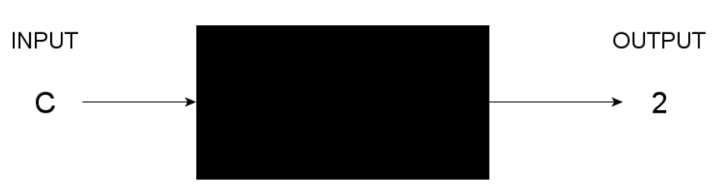</p> [The Codeless Guide to Hashing and Hash Tables](https://www.freecodecamp.org/news/the-codeless-guide-to-hash/) ## Hashing Black box (Have no idea how hashing works and do know that this box can do it) <p>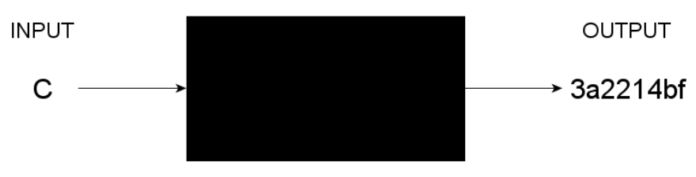</p> [The Codeless Guide to Hashing and Hash Tables](https://www.freecodecamp.org/news/the-codeless-guide-to-hash/) ## Hashing > A hash function - A machine - A program - Some piece of software - A mathematical function - ... # <p class="hover-underline-animation">Is Hashing the Same as Encryption or Encoding? </p><br> ## Hashing - Encoding differs from encryption and hashing in that the goal of encoding is not to obscure data for any security purpose, but merely to convert the data into a format that another system can use. ## Hashing to basic mathematics - $f$: hash function - $x$: the input - $f(x)$: the output of this process ## Hashing > Passing into this black box a password and getting out a hash, and then storing that hash and not the password in our database or text file of usernames and passwords <p class='titlep'> </p> <p class='titlep'> </p> # <p class="hover-underline-animation">Provide apple as an input to this hash function? </p><br> ## Hashing - Apple->1 - Banana->2 - Cherry->3 - Avocado->? - might actually have the same output > Leak information - Information Leakage / Password Hash Disclosure Password hash disclosure is an information leakage vulnerability, which occurs when an application discloses the hashed form of a password, usually in plain text, making it easier for attackers to brute force guess the plain text password. [Information Leakage / Password Hash Disclosure](https://turingsecure.com/knowledge-base/issues/password-hash-disclosure/#:~:text=Information%20Leakage%20%2F%20Password%20Hash%20Disclosure&text=Password%20hash%20disclosure%20is%20an,guess%20the%20plain%20text%20password.) > How do hackers find hashed passwords? - Once the attacker gains access to the compromised account with the stolen credentials, they may use various techniques to extract password hashes. They may scrape the active memory of the compromised system or explore system files and configuration settings to find valid password hashes. [Pass-the-hash attacks: Examples and prevention](https://nordvpn.com/blog/pass-the-hash/#:~:text=Once%20the%20attacker%20gains%20access,to%20find%20valid%20password%20hashes.) ## An example - Programs run in RAM (temporary memory). - Security tools or attackers can use memory dump tools (such as, Windows Task Manager / Process Explorer, Volatility Framework, etc.) to copy what is in RAM. - The copied data can then be searched for password hashes or secrets. - Operating systems may have system calls or debugging tools that allow access to process memory. > That is why modern systems use encryption and memory protection to reduce this risk. # <p class="hover-underline-animation">What might be better than outputting 1 or 2 or 3? </p><br> ## Hashing <p>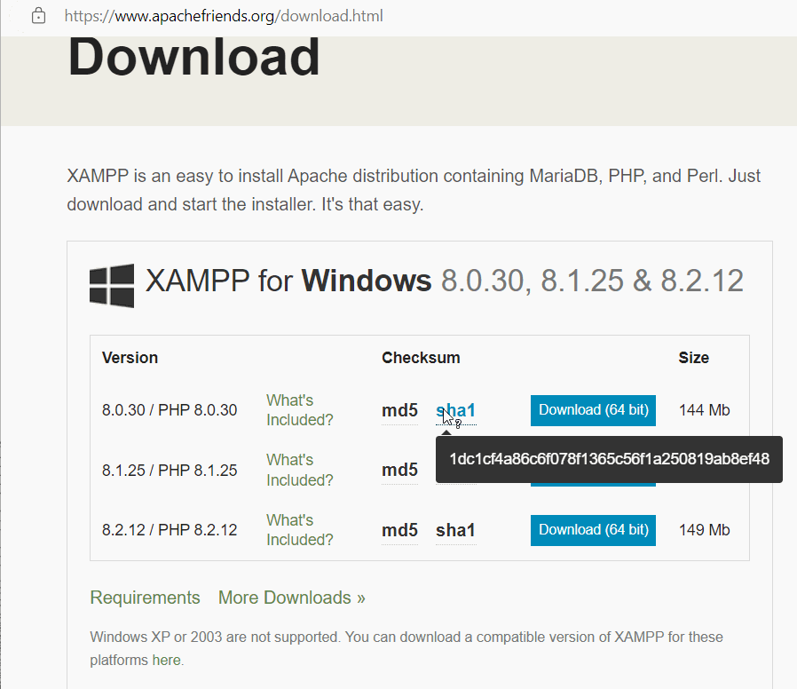</p> [XAMPP](https://www.apachefriends.org/download.html) > Certutil <p>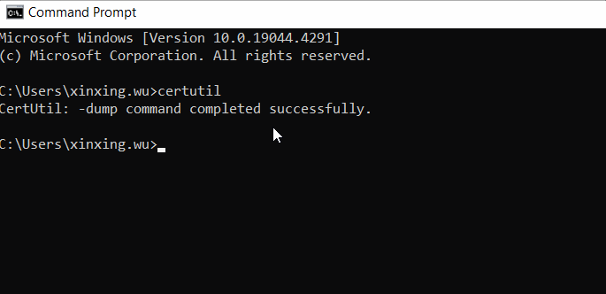</p> > Certutil - Windows Command Prompt ``` certutil -? ``` ``` certutil [options] -asn File [type] ``` ``` certutil -hashfile <file> MD5 ``` [How to Check an MD5](https://portal.nutanix.com/page/documents/kbs/details?targetId=kA07V000000LWYqSAO) > MD5 - The MD5 message-digest algorithm is a widely used hash function producing a 128-bit hash value. MD5 was designed by Ronald Rivest in 1991. [MD5](https://en.wikipedia.org/wiki/MD5) <div class="wrapper nine"> <div> <h3 class="rotate"> <span>T</span> <span>R</span> <span>Y</span> </h3> </div> </div> [MD5 Hash Generator](https://www.md5hashgenerator.com/) > SHA-1 - SHA-1 produces a message digest based on principles similar to those used by Ronald L. Rivest of MIT in the design of the MD2, MD4 and MD5 message digest algorithms, but generates a larger hash value (160 bits vs. 128 bits). [SHA-1](https://en.wikipedia.org/wiki/SHA-1#:~:text=SHA%2D1%20produces%20a%20message,the%20U.S.%20Government%27s%20Capstone%20project.) [MD5 vs SHA1 vs SHA2 vs SHA3](https://signmycode.com/blog/md5-vs-sha1-vs-sha2-vs-sha3) > SHA-1 <div class="wrapper nine"> <div> <h3 class="rotate"> <span>T</span> <span>R</span> <span>Y</span> </h3> </div> </div> [SHA-1 Hash Generator](https://codebeautify.org/sha1-hash-generator) ## Hashing A very common older hash function for apple might actually output ``` ..ekWXa83dhiA ``` - Shouldn't see any kind of <spanGREEN>pattern</spanGREEN>. - Storing in my database of passwords usernames and hash values. <div class="popup" onclick="myFunction1()"><p class="blink" style="font-size:24px;"><spanBYMix>Advantage?</spanBYMix></p> <span class="popuptext" id="myPopup1" STYLE="font-size:25px">If someone now attacks this server and somehow gains access to all of these usernames and hashes, what they don't have is an entire list of passwords. So they can't quite as easily go about credential stuffing and figuring out ... </span> </div> > A problem - The server compares what you typed in as your password against whatever password is in their database. <div class="popup" onclick="myFunction2()"><p class="blink" style="font-size:24px;"><spanBYMix>Example</spanBYMix></p> <span class="popuptext" id="myPopup2" STYLE="font-size:25px">You type in your username and then you type in your password, once that username and password are sent over the internet, to that server, well, the server probably compares what you typed in against the username and their database, or their text file, ... </span> </div> <p class='titlep'> </p> > A problem - We have you typing the username and we do have the username still in the database. ``` Alice, Bob, ... ``` But we don't have is apple and banana ... > We've replaced those altogether with hashes. > A problem - We don't want to compare A-P-P-L-E to this because it obviously doesn't match; - Bob's banana, we don't want to compare against this because it's not going to match. <p class='titlep'> </p> <p class='titlep'> </p> # <p class="hover-underline-animation">What can we do? </p><br> <p class='titlep'> </p> <p class='titlep'> </p> > Authentication works on the server side > The way when using hashing is as follows. - When you first create an account or register for this website or app, you type in, if you're Alice, <spanRED>Enter</spanRED> - Then apple, for instance, Enter. - That username, Alice, that password, Apple, are sent to the server. > The way when using hashing is as follows. - But what the server does before saving the username and password is it runs that <div class="popup" onclick="myFunction3()"><p class="blink" style="font-size:24px;"><spanBYMix>hash function</spanBYMix></p> <span class="popuptext" id="myPopup3" STYLE="font-size:25px">On Alice's password, which is apple, converts it thereafter to this value, and stores Alice's username and the hash of Alice's password only and throws away apple, deletes it, it forgets it in memory. </span> </div> <br> <p>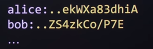</p> ## Hashing - What then happens next? ... the next time Alice tries to log into this website ... - Alice types in Alice as her username, apple as her password, Enter, those get sent to the server - The server can't just compare username against username and password against password because it doesn't have the password in its database <p class='titlep'> </p> <p class='titlep'> </p> # <p class="hover-underline-animation">What can the server do? </p><br> ## Hashing - The server can repeat <spanGREEN>the very same process</spanGREEN>, taking Alice's password as inputted, A-P-P-L-E, run it through the <spanBYMix>exact</spanBYMix> <spanRED>same</spanRED> hash function a day, a week, a year later, and then compare that resulting hash value to whatever is stored in this text file or database. ## Hashing The server's hacked into and <spanRED>this data is leaked</spanRED>, at least they only know the usernames on your system, <spanGREEN>not the actual passwords<spanGREEN>. > Programming - In software that converts passwords to hash values. - Use the <spanRED>same</spanRED> library, the <spanRED>same</spanRED> code, to create hash values - <spanBYMix>Is it easy to hack these hashes?</spanBYMix> > Hash functions that are available in the libraries, and then you can <spanRED>reverse</spanRED> the hash results, is that right? <p class='titlep'> </p> # <p class="hover-underline-animation">Hashes are <spanRED>not</spanRED> reversible </p><br> - You can compare them, but you can't reverse the process ## Hashing - Not system <spanBYMix>absolutely</spanBYMix> secure; But <spanGREEN>relatively</spanGREEN> more secure. - More work (time) to figure out what the actual passwords are: <spanRED>just raises the bar</spanRED>. ## Hashing - Network settings ``` sudo ifconfig eth0 up sudo dhclient eth0 ``` <p>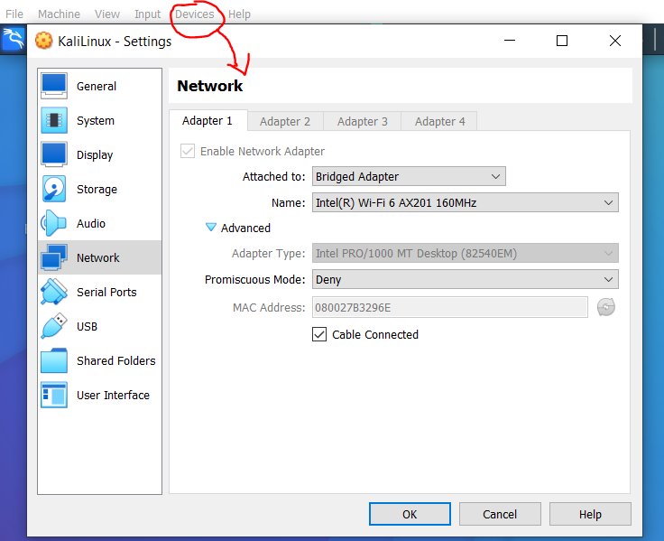</p> ## Hashing <div class="wrapper nine"> <div> <h3 class="rotate"> <span>C</span> <span>O</span> <span>D</span> <span>I</span> <span>N</span> <span>G</span> </h3> </div> </div> ``` git clone https://github.com/s0md3v/Hash-Buster.git cd Hash-Buster ``` <p>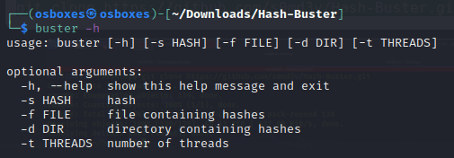</p> ## Hashing <div class="wrapper nine"> <div> <h3 class="rotate"> <span>C</span> <span>O</span> <span>D</span> <span>I</span> <span>N</span> <span>G</span> </h3> </div> </div> ``` sudo make install ``` - The make install command will copy the built program, and its libraries and documentation, to the correct locations. > Cracking a hash <div class="wrapper nine"> <div> <h3 class="rotate"> <span>C</span> <span>O</span> <span>D</span> <span>I</span> <span>N</span> <span>G</span> </h3> </div> </div> ``` buster -s a6eb56f80be8a120436d6f1c9b8d87ca ``` <p>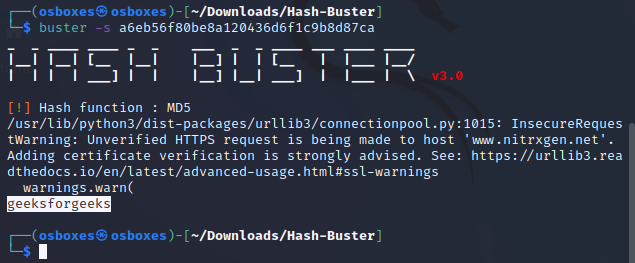</p> > Cracking a hash <p>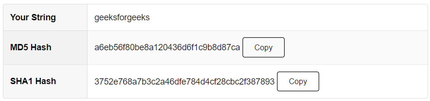</p> [MD5 Hash Generator](https://www.md5hashgenerator.com/) > Cracking a hash <div class="wrapper nine"> <div> <h3 class="rotate"> <span>C</span> <span>O</span> <span>D</span> <span>I</span> <span>N</span> <span>G</span> </h3> </div> </div> ``` buster -s 1f3870be274f6c49b3e31a0c6728957f ``` <p>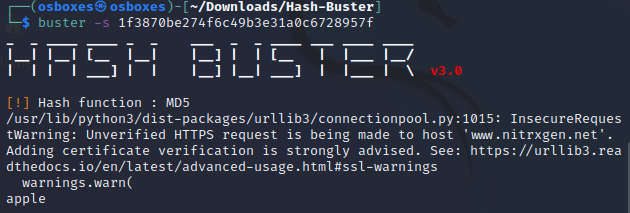</p> <div class="popup" onclick="myFunction18()"><p class="blink" style="font-size:24px;"><spanBYMix>hash function</spanBYMix></p> <span class="popuptext" id="myPopup18" STYLE="font-size:25px">To "crack" a hash, you can't reverse it, but instead compare it to a known database of precomputed hashes for possible matches. Hash cracking tools (like Hash Buster) often use rainbow tables or brute-force techniques to guess the input that could have produced the hash.<br> In summary, the principle is that hashing is a one-way, non-reversible process designed for efficiency, integrity verification, and uniqueness. </span> </div> ## Hashing - [Google Drive of Hash-Buster](https://drive.google.com/file/d/1iV7b7w6hJf7g_7gar6zBkc2GH1xxSCfN/view?usp=sharing) - [Hash-Buster](https://www.geeksforgeeks.org/hash-buster-v3-0-crack-hashes-in-seconds/) - Another way - [Google Drive of Python-Hash-Cracker](https://drive.google.com/file/d/1a6uhmDwtxXb2OUE5WoWPbjTyMIJWWsU6/view?usp=sharing) - [Python-Hash-Cracker](https://github.com/Starwarsfan2099/Python-Hash-Cracker ## Hashing - hashcat on Kali - Others (Online tools) - https://md5decrypt.net/en/ - https://crackstation.net/ <p class='titlep'> </p> # <p class="hover-underline-animation">If the password is intercepted before it's encrypted? </p><br> > A problem <p>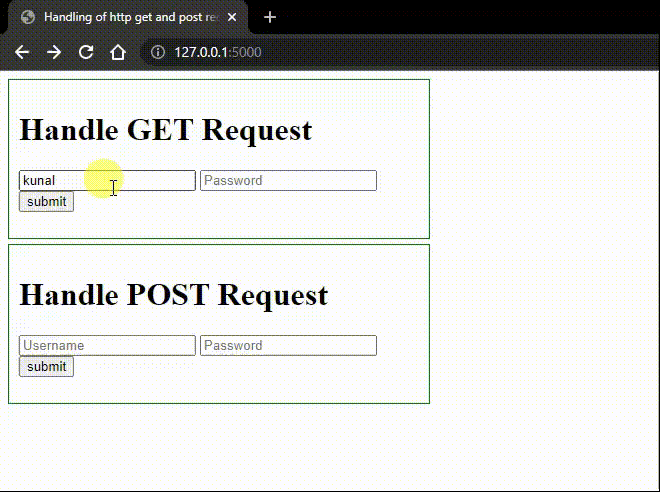</p> [Link](https://midway.instructure.com/courses/7239/pages/examples) ## Hashing - You can still use a dictionary, for instance, of English words, a dictionary of English fruits, - One fruit at a time, run each of those values as input into the same hash function, the library or code. - No longer as simple as just comparing apple against apple and banana against banana (do some computational work, <spanRED>increasing the cost or the complexity for the adversary</spanRED>). > Hash table - A hash table uses a hash function to compute an index, also called a hash code, into an array of buckets or slots, from which the desired value can be found. ## Hashing > Rainbow table - A rainbow table is a <spanRED>precomputed</spanRED> table for caching the outputs of a cryptographic hash function, usually for cracking password hashes. Passwords are typically stored not in plain text form, but as hash values. - Adversaries might have already hashed all possible passwords of length 4 or 5 or 6 or 7 or 8 ... <p class='titlep'> </p> ## <p class="hover-underline-animation"><spanRED>Certain</spanRED> hash functions, this threat of a rainbow table is just not feasible. </p><br> > Example - Alice might have a password of apple, Bob might have a password of banana, - but suppose that both Carol and Charlie have a password of cherry. - <spanBYMix>And just by coincidence, they both chose the same password and are in this same database.</spanBYMix> > Hashing can leak information Use the same function to hash apple and banana and now cherry, ... [MD5 Hash Generator](https://www.md5hashgenerator.com/) <p class='titlep'> </p> ## <p class="hover-underline-animation">If you pass the exact same input, you're going to get the same output again and again, unless there's some <spanBYMix>randomness</spanBYMix> going on. </p><br> <p class='titlep'> </p> <p class='titlep'> </p> <p class='titlep'> </p> > Is this a big deal? > Hashing can leak information - If some adversary attacks this database and gains access to all of these usernames and hashes - We have leaked information in the sense that the adversary: don't know what Carol's password is or what Charlie's password is, but I know it's the <spanBYMix>same</spanBYMix> password > Hashing can leak information - Might be enough information to figure out with higher probability what it is. - <spanBYMix>Maybe Carol and Charlie are related</spanBYMix>: So maybe you focus on words or numbers that are common to both of them. - <spanGREEN>Maybe there's some information</spanGREEN>: they both like the same TV shows, they both like the same movies. > Hashing can leak information - Maybe the intersection of information that with higher probability, to figure out, without brute force, even, what Carol's password is and Charlie's password is. > Hashing can leak information - We only have four users in this database. - Imagine having many more. - Some of us are going to have the same username <p class='titlep'> </p> ## <p class="hover-underline-animation">Do any of you have a password of 1234 or (a little harder) in some website or app? </p><br> <p class='titlep'> </p> > If so, might be alone enough information to <spanRED>leak and increase the probability</spanRED> <p class='titlep'> </p> # <p class="hover-underline-animation">How can we fix this issue? </p><br> > Sprinkling a little bit of salt on the hash function <p>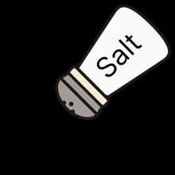</p> <p class='titlep'> </p> > Perturbing the output: much less likely that two people with the same passwords are going to have the same hash value. <p class='titlep'> </p> # <p class="hover-underline-animation">So how does this work? </p><br> ## Salt - A little bit of a sprinkling of, just two characters, two numbers, two letters, or a combination thereof. - <spanRED>Different users should have different salt values</spanRED> - This is all done by the server automatically, picking a random two characters - This ensures that even if Carol and Charlie have the exact same password, have different hash values <p class='titlep'> </p> > Password + A little salt=<spanRED>not</spanRED> leaking information ## Salt - If by chance, by bad luck, the system chooses the same salt for both Carol and Charlie, there might still be information leaked. <p class='titlep'> </p> # <p class="hover-underline-animation">Where do we store the salt? </p><br> ## Salt - The salt is actually stored in the hash value itself, according to this algorithm, in the first two characters. - And the value of storing the salt in the first two characters of the hash is as follows. <p>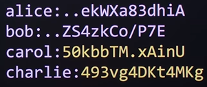</p> ## Example - The next time Carol logs in, she types in her username, Carol, and hits Enter. - The server now knows, OK, I'm expecting a password from Carol, - Now the system is not storing cherry, so it's <spanRED>not</spanRED> going to compare literally what Carol typed in, but it is going to hash cherry - but first, the system is going to check, - What is Carol's hash-- what is Carol's salt? ## Example (Cont.) - Looking only at the first two characters by convention. - Then what the server is going to do, it's going to take whatever Carol typed in, cherry, it's going to pass in 50 <p class='titlep'> </p> # <p class="hover-underline-animation">Has anyone ever forgotten your password? </p><br> ## Hashing - But have you ever gone to a website or app, clicked that link Forgot Password - can reset the password? - gotten back an email that actually <spanRED>contains your password</spanRED> - Do not use that website anymore. <p class='titlep'> </p> # <p class="hover-underline-animation">Why? </p><br> <p class='titlep'> </p> > The hashes are irreversible. ## Hashing - A recommendation from National Institutenfor Standards and Technology (NIST) is that Verifiers shall store memorized secrets in the form that is resistant to offline attacks. - Memorized secrets SHALL be salted and hashed using a suitable one-way key derivation function. ## Hashing - SHA-2 and SHA-3. - Sophisticated mathematical functions - take as input, then output a hash value <div align="left"> [SHA-2](https://en.wikipedia.org/wiki/SHA-2) [SHA-3](https://en.wikipedia.org/wiki/SHA-3) [Difference Between SHA and MD5](http://www.differencebetween.net/technology/difference-between-sha-and-md5/) </div> > SHA-1 (Secure Hash Algorithm 1) - SHA-1 was designed by the National Security Agency (NSA) and published by the National Institute of Standards and Technology (NIST) in 1993. - <span style="font-size: 20px;">It produces a 160-bit hash value (20 bytes).</span> - <span style="font-size: 20px;">SHA-1 is no longer considered secure for many cryptographic applications due to vulnerabilities discovered in the algorithm. In 2005, cryptanalysts found theoretical attacks that could allow for collisions to be found in less computational time than was previously thought. As a result, its security is considered compromised, and its use is not recommended for secure applications.</span> > SHA-2 (Secure Hash Algorithm 2) - SHA-2 is a family of cryptographic hash functions that includes SHA-224, SHA-256, SHA-384, SHA-512, SHA-512/224, and SHA-512/256. - <span style="font-size: 20px;">SHA-224, SHA-256, SHA-384, and SHA-512 produce hash values of 224, 256, 384, and 512 bits respectively.</span> - <span style="font-size: 20px;">SHA-2 was designed to address the security vulnerabilities found in SHA-1. As of my last knowledge update in September 2021, SHA-2 is widely used and considered secure for various cryptographic applications.</span> ## Hashing - SHA-2 <p>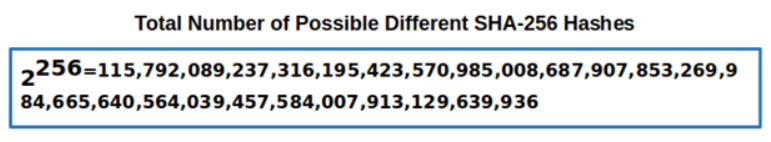</p> > SHA-3 (Secure Hash Algorithm 3) - SHA-3 was designed by Guido Bertoni, Joan Daemen, Michaël Peeters, and Gilles Van Assche and selected as the winner of the NIST's Cryptographic Hash Algorithm Competition in 2012. - SHA-3 is not based on the SHA-2 design but rather on the Keccak algorithm developed by the designers. - <span style="font-size: 20px;">SHA-3 supports hash output lengths of 224, 256, 384, and 512 bits, similar to SHA-2.</span> - <span style="font-size: 20px;">SHA-3 is designed to provide an alternative to SHA-2, offering a new hash function that is secure and efficient.</span> - <span style="font-size: 20px;">While SHA-3 is not as widely deployed as SHA-2, it is gaining adoption in various applications.</span> > <div align="left"> In summary, SHA-1 is outdated and no longer considered secure due to vulnerabilities, while SHA-2 is widely used and considered secure. SHA-3 is a newer alternative that provides a secure hash function based on different principles from SHA-2.</div> <div align="left"> Please read [Secure Hash Algorithms](https://cryptobook.nakov.com/cryptographic-hash-functions/secure-hash-algorithms) to know more about SHA-2 and SHA-3. [Secure Hashing: SHA-1, SHA-2, and SHA-3](./files/SecureHashing.pdf) </div> ## Hashing - Different input messages are expected to produce different output hash values (message digest). <p>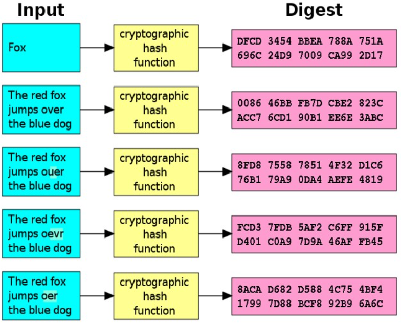</p> ## Hashing > A collision means the same hash value for two different inputs. For simple hash functions it is easy to reach a collision. <div class="popup" onclick="myFunction4()"><p class="blink" style="font-size:24px;"><spanBYMix>Example</spanBYMix></p> <span class="popuptext" id="myPopup4" STYLE="font-size:25px">Assume a hash function h(text) sums of all character codes in a text. It will produce the same hash value (collision) for texts holding the same letters in different order, i.e. h('abc') == h('cab') == h('bca'). To avoid collisions, cryptographers have designed collision-resistant hash functions. </span> </div> ## Hashing - Old hash algorithms like MD5, SHA-0 and SHA-1 are considered insecure and were withdrawn due to cryptographic weaknesses (collisions found). <div align="left"> [SHA-256 Collision Attack with Programmatic SAT](./files/SHA256.pdf) </div> # MD5 - There are other algorithms can be used to verify the authenticity and integrity of messages when you sent it over the internet from one person to another. - We focused on one-way hash functions - mathematical functions, - Programming: input a string of arbitrary length. - Differences between SHA, MD5, and SHA256: output length, security level, and performance. # MD5 - MD5 stands for Message Digest and SHA1 stands for Secure Hash Algorithm - MD5 is a cryptographic hash function algorithm that takes the message as input of any length and changes it into a fixed-length message of 16 bytes. - <spanRED>The output of MD5 (Digest size) is always 128 bits</spanRED>. MD5 was developed in 1991 by Ronald Rivest. # MD5 - It is used for file authentication. - In a web application, it is used for security purposes. e.g. Secure password of users etc. - Using this algorithm, We can store our password in 128 bits format. <p>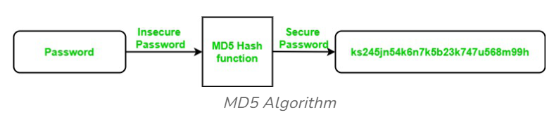</p> <p class='titlep'> </p> # <p class="hover-underline-animation">Converting the data to binary </p><br> ## MD5 - Example - Turning into a 128-bit hash like this > 23db6982caef9e9152f1a5b2589e6ca3 - Each MD5 hash looks like 32 numbers and letters, but each digit is in hexadecimal and represents four bits. - The MD5 algorithm take inputs of any length, and turn them into seemingly random(deterministic), fixed-length (128-bit) strings. ## MD5 - Example - American Standard Code for Information Interchange (<spanRED>ASCII</spanRED>) <p>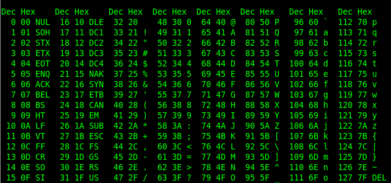</p> <spanBYMix>Convert human readable text into the binary code that computers can read</spanBYMix> ## MD5 - Example - For simplicity, our example will stick to a single 512-bit block of data that contains 16 words. > Step 1: Input - “They are deterministic” is written in binary as: 01010100 01101000 01100101 01111001 00100000 01100001 01110010 01100101 <spanRED>00100000</spanRED> 01100100 01100101 01110100 01100101 01110010 01101101 01101001 01101110 01101001 01110011 01110100 01101001 01100011 <div align="left";> - [Binary to Text Translator](https://www.rapidtables.com/convert/number/binary-to-ascii.html) </div> ## MD5 Hash program <div class="wrapper nine"> <div> <h3 class="rotate"> <span>C</span> <span>O</span> <span>D</span> <span>I</span> <span>N</span> <span>G</span> </h3> </div> </div> ``` import hashlib def calculate_hash(string, hash_function='md5'): hash_obj = hashlib.new(hash_function) hash_obj.update(string.encode('utf-8')) return hash_obj.hexdigest() # Examples string = "They are deterministic" print("MD5 Hash:") print(calculate_hash(string)) ``` <img src="./images/HashAdd1.jpg" alt="drawing" height="500"/> <p class='titlep'> </p> # <p class="hover-underline-animation">Padding in the MD5 algorithm </p><br> > Step 2: Add padding <img src="./images/padding1add.jpg" alt="drawing" height="320"/> > Step 2: Add padding - Inputs in MD5 are broken up into 512-bit blocks, with padding added to fill up the rest of the space in the block. <div align="left"; style="color:yellow;"> <span style="font-size: 24px">Our input is 22 characters long including spaces, and each character is 8 bits long. This means that the input totals 176 bits. With an input of only 176 bits and a 512-bit block that needs to be filled, we need <spanRED>336 bits of padding to complete the block</spanRED>.</span> </div> > Step 2: Add padding <div align="left"; style="color:yellow;"> <span style="font-size: 24px">After laying out the initial 176 bits of binary that represent our input, the rest of the block is padded with <spanRED>a single one</spanRED>, then enough <spanGREEN>zeros</spanGREEN> to bring it up to a length of 448 bits. So:</span> $448$ (<spanBYMix>? Not 512</spanBYMix>)$ – 1 – 176 = 271$ <span style="font-size: 24px">Therefore the padding for this block will include a one, then an extra <spanBYMix>271 zeros</spanBYMix>.</span> </div> <p class='titlep'> </p> # <p class="hover-underline-animation">Why 448 bits? </p><br> > Step 2: Add padding (Cont.) - The reason we only need to pad it up to 448 bits (<spanBYMix>instead of 512</spanBYMix>) is because the <spanRED>final 64 bits</spanRED> (512 – 64 = 448) are reserved to display the message’s length in binary. - In this case, the number 176 (length of input) is 10110000 in binary. - This forms the very end of the padding scheme, while the preceding <spanGREEN>56 bits</spanGREEN> (<spanRED>64 minus the eight bits that make up 10110000</spanRED>) <spanGREEN>are all filled up with zeros</spanGREEN>. > Step 2: Add padding (Cont.) - In cases where the message length takes up a greater number of bits, there will be fewer zeros. If the initial input’s length is longer than 64 bits (if it is greater than $2^{64}$, which equals 18,446,744,073,709,551,616 in decimal), then only the least significant 64 bits are used. - The term “least significant bits” essentially means the rightmost numbers. <div class="popup" onclick="myFunction5()"><p class="blink" style="font-size:24px;"><spanBYMix>Example</spanBYMix></p> <span class="popuptext" id="myPopup5" STYLE="font-size:25px">If we only wanted the four least significant bits of a random binary number like 01011110, we would be referring to the 1110 and disregarding the initial 0101. </span> </div> > Step 2: Add padding (Cont.) <p>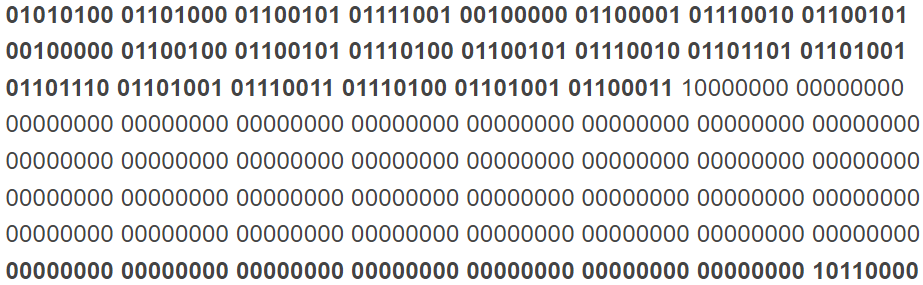</p> - Once the <div class="popup" onclick="myFunction6()"><p class="blink" style="font-size:24px;"><spanBYMix>padding scheme</spanBYMix></p> <span class="popuptext" id="myPopup6" STYLE="font-size:22px">The first 176 bits (the length varies according to the initial input) represent our initial input of “They are deterministic” in binary. The next 272 bits are a one followed by 271 zeros. The final 64 bits are the length of our initial input (176 bits), written in binary. It is preceded by zeros to fill the rest of the 64 bits. The three components of the padded input have been broken up between bold and regular text to make it easier to see where each begins and ends. </span> </div> is complete, we end up with the following 512-bit string. <p class='titlep'> </p> # <p class="hover-underline-animation">Inputs larger than 512 bits? </p><br> > Step 3: Split - Our 512-bit M needs to be <spanRED>split</spanRED> into sixteen 32-bit “words”. Each of these words is assigned its own number, ranging from $M_0$ to $M_{15}$: <p>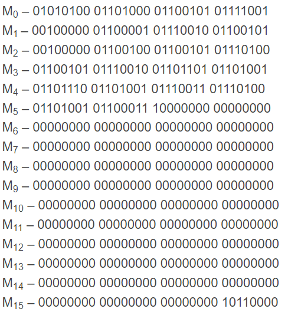</p> > Step 3: Split (Cont.) - Hexadecimal equivalents <p>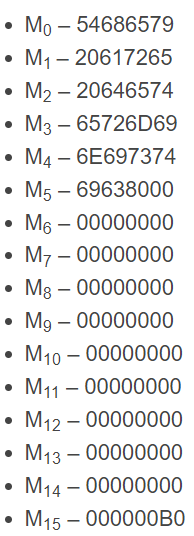</p> > Step 3: Split (Cont.) Each of these M inputs are used in every single round, they are added in different orders. <spanBYMix>Round 1</spanBYMix>: M inputs are added into the algorithm <spanRED>sequentially</spanRED>, e.g. $M_0$, $M_1$, $M_2$, ..., $M_{15}$. <spanBYMix>Round 2</spanBYMix>: M inputs are added in the following order: $M_1$, $M_6$, $M_{11}$, $M_0$, $M_5$, $M_{10}$, $M_{15}$, $M_4$, $M_9$, $M_{14}$, $M_3$, $M_8$, $M_{13}$, $M_2$, $M_7$, $M_{12}$ > Step 3: Split (Cont.) <spanBYMix>Round 3</spanBYMix>: $M_5$, $M_8$, $M_{11}$, $M_{14}$, $M_1$, $M_4$, $M_7$, $M_{10}$, $M_{13}$, $M_0$, $M_3$, $M_6$, $M_9$, $M_{12}$, $M_{15}$, $M_2$ <spanBYMix>Round 4</spanBYMix>: $M_0$, $M_7$, $M_{14}$, $M_5$, $M_{12}$, $M_3$, $M_{10}$, $M_1$, $M8$, $M_{15}$, $M_6$, $M_{13}$, $M4$, $M_{11}$, $M_2$, $M_9$ > Step 4: Initialization Vectors - Initialization Vectors. Four separate numbers, - A – 01234567 - B – 89abcdef - C – fedcba98 - D – 76543210 - Progress through the algorithm, these numbers will be replaced by various outputs that we produce through the calculations. # MD5 - Example - [Algorithm](./images/MD5Alg.jpg) # MD5 - Example - When the initial input is greater than 448 bits long, it is split into multiple 512-bit blocks. Each block includes 512 bits of input data until the entire input has been split into blocks. The final block must include at least 1 bit of padding, plus the 64-bit length in binary. # MD5 - Example <div align="left"> [What is the MD5 Algorithm?](https://www.geeksforgeeks.org/what-is-the-md5-algorithm/) [MD5 Hash Algorithm: Understanding Its Role in Cryptography](https://www.simplilearn.com/tutorials/cyber-security-tutorial/md5-algorithm) [The MD5 algorithm (with examples)](https://www.comparitech.com/blog/information-security/md5-algorithm-with-examples/) [The MD5 Message-Digest Algorithm](https://datatracker.ietf.org/doc/html/rfc1321) </div> # MD5 - Coding - There are many hash functions defined in the “hashlib” library in python. # MD5 - Coding - This hash function accepts sequence of bytes and returns 128 bit hash value, usually used to check data integrity but has security issues. Functions associated : - encode() : Converts the string into bytes to be acceptable by hash function. - digest() : Returns the encoded data in byte format. - hexdigest() : Returns the encoded data in hexadecimal format. # MD5 - Coding <div class="wrapper nine"> <div> <h3 class="rotate"> <span>C</span> <span>0</span> <span>D</span> <span>I</span> <span>N</span> <span>G</span> </h3> </div> </div> ``` import hashlib # initializing string str2hash = "geeksforgeeks" # encoding GeeksforGeeks using encode() # then sending to md5() result = hashlib.md5(str2hash.encode()) # printing the equivalent hexadecimal value. print("The hexadecimal equivalent of hash is : ", end ="") print(result.hexdigest()) ``` <span style="font-size: 16px;"> Please try `str2hash = "Geeksforgeeks"`</span> [MD5 hash in Python](https://www.geeksforgeeks.org/md5-hash-python/) <p class='titlep'> </p> > The MD5 hash is always 128 bits long (commonly represented as 16 hexadecimal bytes). Thus, there are $2^{128}$ possible MD5 hashes. <p class='titlep'> </p> ## <p class="hover-underline-animation">It doesn't matter how short or how long the password is, these cryptographic, these one-way hash functions are one-way. </p>
# Secret-Key Cryptography
## Cipher - Cryptography is about securing our data, particularly when <spanBYMix>transmitting</spanBYMix> data from one person to another. - A mapping between what we'll call code words and the actual message or true reading that those words represent > Code book - You take as input the codetext that you have received as the recipient, - You use that <spanBYMix>same</spanBYMix> code book to look up the code words - You figure out what the actual message is in order to get the <spanBYMix>original</spanBYMix> plaintext > An actual book from over 100 years ago - Left: code words, right: orignal message (the actual message, the so-called plaintext) - Someone has a copy of the book, <spanRED>too</spanRED>, ... <p class='titlep'> </p> ## <p class="hover-underline-animation">Ciphers are more algorithmic in nature</p> ## Cipher 👍 - A cipher - the film [A Christmas Story (1983)(https://www.youtube.com/watch?v=6_XSShVAnkY) depicts the Little Orphan Annie radio show transmitting a secret message that deciphered to: "Be sure to drink your Ovaltine", <p>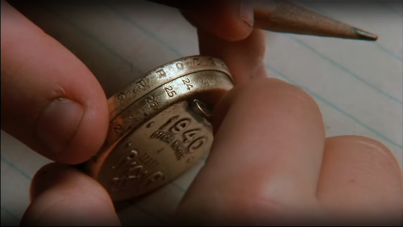</p> <p>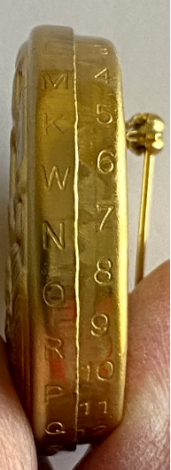</p> ## Cipher - In World War II, the Germans, for instance, had the Enigma Machine, this was a mechanical implementation of this same idea of a cipher. <p>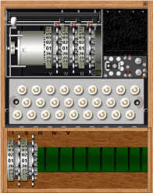</p> <div align="left"> [How did the Enigma Machine work?](https://www.youtube.com/watch?v=ybkkiGtJmkM) [Alan Turing, Enigma, and the Breaking of German Machine](./files/Turing.pdf) </div> ## Cipher - Mechanical -> nowadays implement much more readily and much more scalably in software. - The principle is the same: <spanGREEN>plaintext to ciphertext</spanGREEN> - The reverse - encrypt. <p class='titlep'> </p> ## <p class="hover-underline-animation">How do we configure these ciphers so that you and I can use the <spanGREEN>same</spanGREEN> algorithm but customize them?</p> > In the world of cryptography: we do keep one piece of information secret so that our use of that cipher, that algorithm is <spanGREEN>specific</spanGREEN> to us. This configuration are known as <spanBYMix>keys</spanBYMix>. ## Cipher - It's a key that needs to be known and used <spanBYMix>not only</spanBYMix> by you, but also by the <spanGREEN>recipient</spanGREEN>. ## Cipher - So that by having <spanRED>copies of the same key</spanRED>, - You can not only encrypt messages or encipher them, - but you can also decrypt or decipher those messages, too. ## Cipher 🌞 - They're not physical objects in the virtual world, but really just really big numbers. - letters of an alphabet, maybe even with some punctuation, ... <p class='titlep'> </p> # <p class="hover-underline-animation">In computers, just 0's and 1's</p> ## Secret-Key Cryptography - The security of your data relies on the secrecy of some key. - So if A wants to send a message to B, then A and B must <spanBYMix>keep secret whatever key they are using</spanBYMix> to configure their choice of algorithms. ## Secret-Key Cryptography - Secret-key cryptography is also called <spanRED>symmetric cryptography</spanRED> because the <spanGREEN>same</spanGREEN> key is used to both encrypt and decrypt the data. - Well-known secret-key cryptographic algorithms include Advanced Encryption Standard (AES), Triple Data Encryption Standard (3DES), and Rivest Cipher 4 (RC4). - [Secret Key Cryptography](https://www.ibm.com/docs/en/sdk-java-technology/8?topic=processes-secret-key-cryptography) > Both A and B in this story are going to use the <spanBYMix>exact same</spanBYMix> key. <p class='titlep'> </p> ## <p class="hover-underline-animation">Not only do you pass as input to the algorithm, you also pass a key.</p> ## Secret-Key Cryptography > Message: A > Key: 1 - Take A as input and 1 as input and output B. - When someone receives this message, they need to not only what algorithm I used to encrypt it - but they also need to know what the key is. ## Secret-Key Cryptography - If your key is 13 and your plaintext is A, then your ciphertext should be N, because that is 13 places away from A - A key of 26 is going to output for your ciphertext, the exact same thing as your plaintext. <p>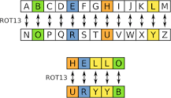</p> <p class='titlep'> </p> ## <p class="hover-underline-animation">ROT26 is twice as secure as ROT13 because 13 times 2 is 26.</p> ## Secret-Key Cryptography ROT13 ("rotate by 13 places", sometimes hyphenated ROT-13) is a letter substitution cipher that replaces a letter with the letter 13 letters after it in the alphabet. Instead of only rotating 13 places, ROT26 rotates twice as many characters in the alphabet and is therefore twice as secure? [Pure rust implementation of the rot26 algorithm](https://github.com/jD91mZM2/rot26) ## Secret-Key Cryptography - A Caesar cipher, also known as Caesar's cipher, the shift cipher, Caesar's code, or Caesar shift, is one of the simplest and most widely known encryption techniques. It is a type of substitution cipher in which each letter in the plaintext is replaced by a letter some <spanBYMix>fixed</spanBYMix> number of positions down the alphabet. ## Secret-Key Cryptography <div align="left"> [Online tool of Caesar cipher](https://www.dcode.fr/caesar-cipher) [Caesar cipher](https://en.wikipedia.org/wiki/Caesar_cipher) [Caesar Cipher in Cryptography](https://www.geeksforgeeks.org/caesar-cipher-in-cryptography/) </div> ## Secret-Key Cryptography - In the real world, with our phones and desktops and laptops today, generally used our AES or triple DES, both of which are popular algorithms that have been vetted by the world and are very commonly used as secret key encryption ciphers or symmetric key encryption ciphers - Require that both the sender and the receiver know and use the exact same key. <p class='titlep'> </p> ## <p class="hover-underline-animation">Does symmetric key cryptography solve all of our problems?</p>
# Public-Key Cryptography
## Public-Key Cryptography - Public-key cryptography, or <spanREd>asymmetric</spanREd> cryptography, is the field of cryptographic systems that use pairs of related keys. Each key pair consists of a public key and a corresponding private key. Key pairs are generated with cryptographic algorithms based on mathematical problems termed one-way functions. - [Public-key cryptography](https://en.wikipedia.org/wiki/Public-key_cryptography) # Difference <div align="left"> > In the Private key, the same key (secret key) is used for encryption and decryption. In this key is symmetric because the only key is copied or shared by another party to decrypt the cipher text. It is faster than public-key cryptography. </div> # Difference <div align="left"> > In a Public key, two keys are used one key is used for encryption and another key is used for decryption. One key (public key) is used to encrypt the plain text to convert it into cipher text and another key (private key) is used by the receiver to decrypt the cipher text to read the message. </div> # Difference between Private key and Public key - [Difference between Private key and Public key](https://www.geeksforgeeks.org/difference-between-private-key-and-public-key/) <p class='titlep'> </p> ## <p class="hover-underline-animation">Throughout the previous whole discussion, the sender and the receiver have a shared secret between them.</p> <p class='titlep'> </p> ## <p class="hover-underline-animation">A shared secret between parties A and B if A and B have never talked before?</p> > You want that connection to Amazon or Gmail to be encrypted, # <p class="hover-underline-animation">HTTPS </p> ## Public-Key Cryptography - You <spanRED>don't</spanRED> know anyone personally at gmail.com. - So <spanRED>what key</spanRED> are you going to use to communicate <spanBYMix>securely</spanBYMix> with these websites - <spanGREEN>Symmetric</spanGREEN> key or <spanGREEN>secret</spanGREEN> key encryption, is that it assumes that you have a <spanRED>shared secret</spanRED> between you and the other person. ## Public-Key Cryptography - The only way to <spanGREEN>establish a shared secret would be to send it to the other person securely</spanGREEN>, but if you <spanRED>can't</spanRED> communicate securely, you <spanRED>can't</spanRED> even send them the secret you ... <spanBYMix>deadlock</spanBYMix> <p>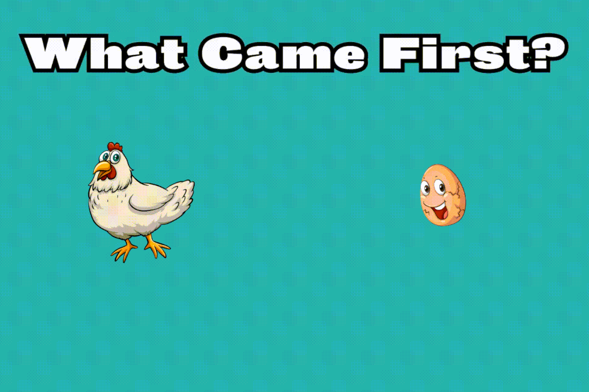</p> <p>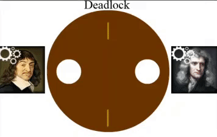</p> ## Public-Key Cryptography - Public-key cryptography, otherwise known as <handwriting>asymmetric key cryptography</handwriting>. - Asymmetry is implying that you actually don't use one key between the two people A and B. You actually use <spanBYMix>two keys</spanBYMix>: <handwriting>A public key and a private key</handwriting> - Diffie–Hellman (DH), Menezes–Qu–Vanstone (MQV), Rivest–Shamir–Adleman (RSA), ... ## Public-Key Cryptography - A public key and a private key. <p>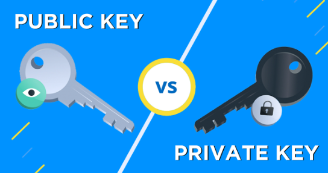</p> - There is a <handwriting>mathematical relationship</handwriting> between these numbers, the public key and the private key, but that's a relationship that your phone or your laptop or your desktop figures out when <spanBYMix>generating</spanBYMix> these values for you. ## Public-Key Cryptography - You can literally email it out, you can put it in the signature of every email. - You can post it on your website, on social media. - The whole point of the public key is to make it, indeed, <spanBYMix>public</spanBYMix>. - But, suffice it to say, the private key should be <spanRED>kept secret by you</spanRED>, <handwriting>private by you on your own device.</handwriting> ## Public-Key Cryptography - Public key cryptography and the mathematics underlying it is that <spanGREEN>if you share your public key with someone else on the internet, they can use that public key to encrypt a message and then send it to you over email or chat or any other technology.</spanGREEN> ## Public-Key Cryptography - The only key in the world that can decrypt a message that has been <spanBYMix>encrypted with your public key is your private key.</spanBYMix> <p>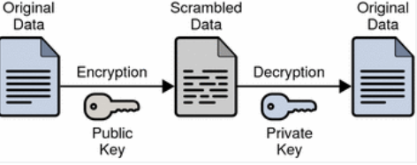</p> ## Public-Key Cryptography - Secret key cryptography or symmetric key cryptography where you're using the <spanREd>same</spanREd> key back and forth. - With asymmetric encryption, you are using <spanBYMix>one key for one process</spanBYMix> and <spanGREEN>another key for the decryption process</spanGREEN>. ## Public-Key Cryptography - <spanGREEN>Diffie–Hellman (DH)</spanGREEN> key exchange is a mathematical method of securely exchanging cryptographic keys over a public channel and was one of the first public-key protocols as conceived by Ralph Merkle and named after Whitfield Diffie and Martin Hellman. - [Diffie–Hellman](https://en.wikipedia.org/wiki/Diffie%E2%80%93Hellman_key_exchange) ## Public-Key Cryptography - <spanGREEN>Menezes–Qu–Vanstone (MQV)</spanGREEN> key agreement is an improvement on the basic Diffie-Hellman designed to <spanRED>eliminate a man-in-the-middle attack</spanRED>. - [Menezes–Qu–Vanstone](https://en.wikipedia.org/wiki/MQV) ## Public-Key Cryptography - <spanGREEN>Rivest–Shamir–Adleman (RSA)</spanGREEN> is a public-key cryptosystem, one of the oldest widely used for secure data transmission. The initialism "RSA" comes from the surnames of Ron Rivest, Adi Shamir and Leonard Adleman, who publicly described the algorithm in 1977. It relies on really <spanRED>big prime</spanRED> numbers. - [Rivest–Shamir–Adleman](https://en.wikipedia.org/wiki/RSA_(cryptosystem)) ## RSA - RSA algorithm is an asymmetric cryptography algorithm. - Asymmetric actually means that it works on two different keys i.e. <handwriting>Public Key and Private Key</handwriting> <div class="popup" onclick="myFunction7()"><p class="blink" style="font-size:24px;"><spanBYMix>Example</spanBYMix></p> <span class="popuptext" id="myPopup7" STYLE="font-size:22px">An example of asymmetric cryptography:<br> 1) A client (for example browser) sends its public key to the server and requests some data.<br> 2) The server encrypts the data using the client’s public key and sends the encrypted data.<br> 3) The client receives this data and decrypts it. </span> </div> ## RSA - RSA is a factoring-based algorithm, and computing power grows constantly, and people all over are working on <handwriting>breaking RSA factorization</handwriting> <hr> ### The idea of RSA is based on the fact that it is <spanBYMix>difficult to factorize a large integer</spanBYMix> ## RSA - The public key consists of two numbers where one number is a multiplication of two large prime numbers. - Private key is also derived from the same two prime numbers. > So if somebody can factorize the large number, the private key is compromised. ## RSA > Therefore encryption strength totally lies on the <spanBYMix>key size</spanBYMix> and if we double or triple the key size, the strength of encryption increases exponentially. - RSA keys can be typically 1024 or 2048 bits long, but experts believe that 1024-bit keys could be broken in the near future. > Step 1: Generate the RSA modulus - Begins with selection of two <spanREd>prime</spanREd> numbers namely $p$ and $q$, and then calculating their product $n$. $$n=p*q$$ - Where $n$ is called <handwriting>the modulus for encryption and decryption</handwriting> > Step 2: Derived Number ($e$) - Choose a number $e$: greater than $1$ and less than $n$, such that $e$ is relatively prime to $(p - 1)(q -1)$ (i.e., $e$ and $(p - 1)(q - 1)$ have <spanBYMix>no common</spanBYMix> factor except 1) - Mathematically, choose $e$ such that $1<e<\phi(n)$, $e$ and $\phi(n)$ are coprime, where $\phi(n)=(p-1)(q-1)$. > Step 3: Public key - If $n = p*q$, then the public key is $<e, n>$. <hr> <div align="left"> Encryption Formula: A plaintext MSG $m$ is encrypted by public key $<e, n>$. $$C = m^e {\rm{mod}}\ n$$ - $C$ is ciphertext, $m$ must be less than $n$. A larger message ($>n$) is treated as a concatenation of messages, each of which is encrypted separately. </div> > Step 4: Private Key - Compute a value for $d$ such that $(d * e)\ \rm{mod}\ \phi(n) = 1$. The <spanBYMix>private key</spanBYMix> is <d, n>. <hr> <div align="left"> Decryption Formula: A ciphertext message $C$ is decrypted using private key $<d, n>$. To calculate plain text m from the ciphertext $C$ following formula is used to get plain text $m$. $$m=C^d\ {\rm{mod}}\ n$$ </div> ## RSA - example > Step 1: Generate the RSA modulus <div align="left"> Select two large prime numbers, $p$, and $q$. $p = 7$, $q = 11$. $$n=p*q=77$$ </div> ## RSA - example > Step 2: Derived Number ($e$) <div align="left"> $$\phi(n)=(p-1)(q-1)=(7-1)(11-1)=60$$ Let us now choose relative prime $e$ of 60 as 7. </div> ## RSA - example > Step 3: Public key <div align="left"> Thus the public key is $<e, n> = (7, 77)$. A plaintext message $m=9$. $$C = m^e {\rm{mod}}\ n= 9^7 {\rm{mod}}\ 77=37$$ </div> ## RSA - example > Step 4: Private Key $(d * e) \rm{mod}\ \phi(n) = 1$, so $(d * 7) \rm{mod}\ 60 = 1$, which gives $d = 43$. The private key is $<d, n> = (43, 77)$. <hr> <div align="left"> $$m=C^d {\rm{mod}}n=37^{43} {\rm{mod}}\ 77$$ So, we get $m=9$. In this example, Plain text = 9 and the ciphertext = 37. </div> ## RSA <div align="left"> [RSA Algorithm in Cryptography](https://www.geeksforgeeks.org/rsa-algorithm-cryptography/) [Seriously, stop using RSA](https://blog.trailofbits.com/2019/07/08/fuck-rsa/) [RSA Algorithm Example](https://www.cs.utexas.edu/~mitra/honors/soln.html) [RSA Encryption Algorithm](https://www.javatpoint.com/rsa-encryption-algorithm) </div> ## RSA <div align="left"> [Simulations of an Attack on RSA](./files/RSA.pdf) </div> ## RSA <div class="wrapper nine"> <div> <h3 class="rotate"> <span>C</span> <span>0</span> <span>D</span> <span>I</span> <span>N</span> <span>G</span> </h3> </div> </div> ``` # Python for RSA asymmetric cryptographic algorithm. # For demonstration, values are # relatively small compared to practical application import math def gcd(a, h): temp = 0 while(1): temp = a % h if (temp == 0): return h a = h h = temp p = 3 q = 7 n = p*q e = 2 phi = (p-1)*(q-1) while (e < phi): # e must be co-prime to phi and # smaller than phi. if(gcd(e, phi) == 1): break else: e = e+1 # Private key (d stands for decrypt) # choosing d such that it satisfies # d*e = 1 + k * totient k = 2 d = (1 + (k*phi))/e # Message to be encrypted msg = 12.0 print("Message data = ", msg) # Encryption c = (msg ^ e) % n c = pow(msg, e) c = math.fmod(c, n) print("Encrypted data = ", c) # Decryption m = (c ^ d) % n m = pow(c, d) m = math.fmod(m, n) print("Original Message Sent = ", m) # This code is contributed by Pranay Arora. ``` <div align="left"> <ft> Encrypting and decrypting small numeral values </ft> </div> ## RSA <div class="wrapper nine"> <div> <h3 class="rotate"> <span>C</span> <span>0</span> <span>D</span> <span>I</span> <span>N</span> <span>G</span> </h3> </div> </div> ``` import random import math # A set will be the collection of prime numbers, # where we can select random primes p and q prime = set() public_key = None private_key = None n = None # We will run the function only once to fill the set of # prime numbers def primefiller(): # Method used to fill the primes set is Sieve of # Eratosthenes (a method to collect prime numbers) seive = [True] * 250 seive[0] = False seive[1] = False for i in range(2, 250): for j in range(i * 2, 250, i): seive[j] = False # Filling the prime numbers for i in range(len(seive)): if seive[i]: prime.add(i) # Picking a random prime number and erasing that prime # number from list because p!=q def pickrandomprime(): global prime k = random.randint(0, len(prime) - 1) it = iter(prime) for _ in range(k): next(it) ret = next(it) prime.remove(ret) return ret def setkeys(): global public_key, private_key, n prime1 = pickrandomprime() # First prime number prime2 = pickrandomprime() # Second prime number n = prime1 * prime2 fi = (prime1 - 1) * (prime2 - 1) e = 2 while True: if math.gcd(e, fi) == 1: break e += 1 # d = (k*Φ(n) + 1) / e for some integer k public_key = e d = 2 while True: if (d * e) % fi == 1: break d += 1 private_key = d # To encrypt the given number def encrypt(message): global public_key, n e = public_key encrypted_text = 1 while e > 0: encrypted_text *= message encrypted_text %= n e -= 1 return encrypted_text # To decrypt the given number def decrypt(encrypted_text): global private_key, n d = private_key decrypted = 1 while d > 0: decrypted *= encrypted_text decrypted %= n d -= 1 return decrypted # First converting each character to its ASCII value and # then encoding it then decoding the number to get the # ASCII and converting it to character def encoder(message): encoded = [] # Calling the encrypting function in encoding function for letter in message: encoded.append(encrypt(ord(letter))) return encoded def decoder(encoded): s = '' # Calling the decrypting function decoding function for num in encoded: s += chr(decrypt(num)) return s if __name__ == '__main__': primefiller() setkeys() message = "Test Message" # Uncomment below for manual input # message = input("Enter the message\n") # Calling the encoding function coded = encoder(message) print("Initial message:") print(message) print("\n\nThe encoded message(encrypted by public key)\n") print(''.join(str(p) for p in coded)) print("\n\nThe decoded message(decrypted by public key)\n") print(''.join(str(p) for p in decoder(coded))) ``` <div align="left"> <ft> Encrypting and decrypting plain text messages</ft> </div> ## RSA - [Adi Shamir](https://awards.acm.org/award_winners/shamir_2327856): the Wolf Prize in Mathematics 2024 “for their pioneering contributions to mathematical cryptography, combinatorics, and the theory of computer science”. - The [RSA Conference(2024)](https://www.rsaconference.com/) is a series of IT security conferences. Approximately 45,000 people attend one of the conferences each year. It was founded in 1991 as a small cryptography conference. RSA conferences take place in the United States, Europe, Asia, and the United Arab Emirates each year.
# Digital Signatures
## Digital Signatures - An <spanBYMix>electronic signature</spanBYMix> shows the signer’s agreement with the contents of a document, form, or request. <div class="popup" onclick="myFunction8()"><p class="blink" style="font-size:24px;"><spanBYMix>Example</spanBYMix></p> <span class="popuptext" id="myPopup8" STYLE="font-size:22px">It includes a name typed at the end of an email or document, a picture of a wet signature sent via tax, a signature made by finger swipe on an internet-connected device, e.g., smartphone, tablet, a PIN entered into a bank’s ATM, and ticking the “agree” or “disagree” box in an electronic terms & conditions form. </span> </div> ## Digital Signatures - Digital signatures are a type of electronic signature. But unlike regular electronic signatures, which generally look similar to handwritten signatures, digital signatures might <spanREd>not</spanREd> look anything like traditional signatures. <p>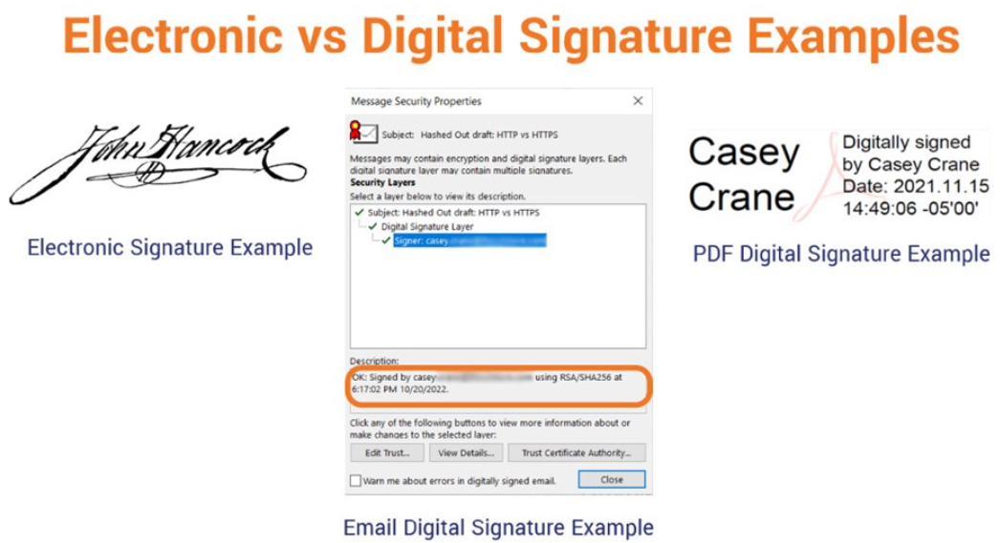</p> ## Digital Signatures - A digital signature is a mathematical way of verifying the authenticity of digital documents to prevent forgery and tampering during the sending and receiving process. ## Digital Signatures - Digital signatures are frequently used between businesses, between businesses and their customers, or between two individuals. They are popular across a wide number of industries due to their legal status and ability to prevent tampering and forgery. <div class="popup" onclick="myFunction9()"><p class="blink" style="font-size:24px;"><spanBYMix>Example</spanBYMix></p> <span class="popuptext" id="myPopup9" STYLE="font-size:22px">Underlying the seemingly simple interface of a digital signature is the complex technology that goes into creating asymmetric cryptography. It protects sensitive information with two mathematically linked keys: a private key, which is only known to the person it belongs to, and a public key, which is shared with anyone who needs to access the digital document. When the recipient gets the document, first they will decrypt the digital signature using the signer’s public key. If the recipient is unable to decrypt the digital signature, it’s a sign that it did not actually come from the intended signer. </span> </div> ## Digital Signatures <div align="left"> - [What is the Difference Between an eSignature and a Digital Signature?](https://www.lightico.com/blog/what-is-the-difference-between-an-esignature-and-a-digital-signature/) - [Examples of When to Use a Digital Signature Certificate](https://www.thesslstore.com/blog/when-to-use-a-digital-signature-certificate/) </div> <p class='titlep'> </p> ## [Sign PDF with Digital Signature Certificate](https://www.youtube.com/watch?v=3HS_2pakKVA) ## Digital Signatures - Not just encrypt messages from point A to point B and back, - but rather, to sign information, sign documents, ... <p class='titlep'> </p> ## <p class="hover-underline-animation">What does it mean to sign something digitally?</p> <p class='titlep'> </p> ## <p class="hover-underline-animation">How does this work?</p> <p class='titlep'> </p> <p class='titlep'> </p> # Mathematics ## Digital Signatures - DSA, ECDSA, RSA, and others can be used to give you the ability to sign documents or other pieces of information digitally. > Elliptic Curve Digital Signature Algorithm (ECDSA) <div align="left"> - The ECDSA is a Digital Signature Algorithm (DSA) which uses keys derived from elliptic curve cryptography (ECC). It is a particularly efficient equation based on public key cryptography (PKC). - [Elliptic Curve Digital Signature Algorithm Link 1](https://www.hypr.com/security-encyclopedia/elliptic-curve-digital-signature-algorithm#:~:text=The%20Elliptic%20Curve%20Digital%20Signature%20Algorithm%20(ECDSA)%20is%20a%20Digital,public%20key%20cryptography%20(PKC).) - [Elliptic Curve Digital Signature Algorithm Link 2 ](https://en.wikipedia.org/wiki/Elliptic_Curve_Digital_Signature_Algorithm) </div> > Digital Signature Algorithm (DSA) <div align="left"> DSA is a signature-only algorithm and requires a private key for signing and a public key for verifying. DSA is a faster algorithm and is simpler to implement than RSA. DSA is more secure than RSA as it provides message integrity and non-repudiation. - [Digital Signature Algorithm ](https://en.wikipedia.org/wiki/Digital_Signature_Algorithm) - [Digital Signature Algorithm (DSA) in Cryptography: How It Works & More ](https://www.simplilearn.com/tutorials/cryptography-tutorial/digital-signature-algorithm#:~:text=DSA%20(Digital%20Signature%20Algorithm),message%20integrity%20and%20non%2Drepudiation.) </div> ## Digital Signatures - The input to this process is a message. - A letter that you've written, a contract that you want to sign, - Something that you want to put your digital signature on. - And the output of this message initially is going to be a hash. ## Digital Signatures - So we can use any number of hash functions to output a fixed length hash value. - Once you have that hash, here's how you digitally sign the document. ## Digital Signatures - An arbitrary-sized document, ... - A letter that you've written, ... - A contract that you've written that you need to sign that might be short, ... - An arbitrary-sized input => a fixed-sized output. ## Digital Signatures > Public-key encryption vs. Private-key encryption - Use your public key to encrypt a message - Use your private key to decrypt it - But in the case of digital signatures, the story gets flipped upside-down. ## Digital Signatures - Public Key and Private Key in Digital Signatures <p>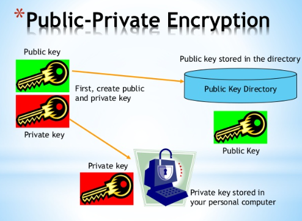</p> ## Digital Signatures - You use your private key and a hash of your message to digitally sign your document and the output of that is a signature--a number or some string of text. - And you send that signature to the recipient # <p class="hover-underline-animation">How does the recipient verify your digital signature? </p> <p class='titlep'> </p> ## <p class="hover-underline-animation">How do they know that this weird-looking sequence of characters or numbers actually was signed by you?</p> ## Digital Signatures - Public key is accessible to everyone, including that recipient. - When that recipient gets your document and your digital signature, should verify the digital signature ## Digital Signatures > The document and that signature <div align="left"> They have received not only the document itself, the so-called message, They've also received your digital signature (human signature). </div> ## Digital Signatures - You then take the public key of the person who signed this document - You take the signature that they claim is their signature - <spanBYMix>You decrypt their signature with their public key</spanBYMix> - That should output the exact same hash that you just calculated ## Digital Signatures - The message itself the document in this story is public. - It's not encrypted, it's not something you really worry about being private. - That signed by a specific person. <p class='titlep'> </p> ## <p class="hover-underline-animation">Is there any possibility to spoof the signatures? </p> ## Digital Signatures - The probability is so, so, so low as long as <spanBYMix>your private key has not been stolen</spanBYMix> ## Example - Example: you are sending a message to a recipient in Office B <div class="popup" onclick="myFunction10()"><p class="blink" style="font-size:24px;"><spanBYMix>Step1</spanBYMix></p> <span class="popuptext" id="myPopup10" STYLE="font-size:22px">You type out a message or create a file with sensitive information. You will then stamp the file with your Private key that can be a password or a code. You press send and the email makes its way through the internet to Office B. </span></div><div class="popup" onclick="myFunction11()"><p class="blink" style="font-size:24px;"><spanGREEN>Step2</spanGREEN></p> <span class="popuptext" id="myPopup11" STYLE="font-size:22px">When Office B receives the information, they will be required to use your public key to verify your signature and unlock the encrypted information. </span></div><div class="popup" onclick="myFunction12()"><p class="blink" style="font-size:24px;"><spanREd>Step3</spanREd></p> <span class="popuptext" id="myPopup12" STYLE="font-size:22px">Then office B needs to use your Private Key (which you have shared with them) to reveal the confidential information on the email. Unless the recipient in Office B has your Private Key, they will be unable to unlock the information in the document. </span> </div> <p>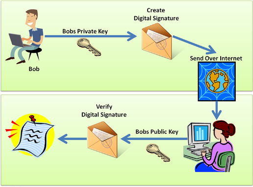</p> ## Example - Digital signatures are essential to the security and authenticity of your data - [Digital Signature Example and Digital Signature Processing](https://signx.wondershare.com/knowledge/digital-signature-example.html)
# Passkeys
## Passkeys 👍 - Another application of public key cryptography > A passkey is a digital credential, tied to a user account and a website or application. Passkeys allow users to authenticate without having to enter a username or password, or provide any additional authentication factor. [Passwordless login with passkeys](https://developers.google.com/identity/passkeys#:~:text=A%20passkey%20is%20a%20digital,provide%20any%20additional%20authentication%20factor.) ## Passkeys > Public and private keys Either encrypt with one and decrypt with the other or vice versa. <p class='titlep'> </p> # <p class="hover-underline-animation">How do passkeys work?</p> ## Passkeys 🌞 - When you go to a website in the future or app, - Rather than being prompted to create a username and password, - You'll just be prompted to create a passkey. - Ask you for your fingerprint or a scan of your face or maybe a pin code, a short number that you type in just to demonstrate with high probability that you are authorized to be using this device and creating this account. ## Passkeys 🌞 <p>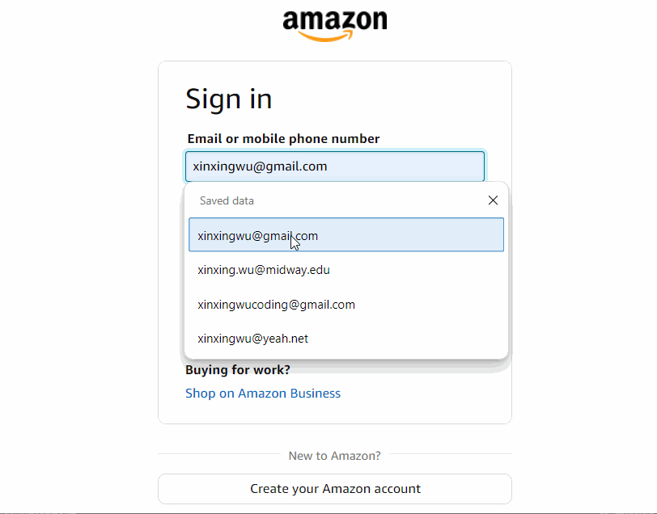</p> <p class='titlep'> </p> # <p class="hover-underline-animation">What then will your device and the website do?</p> ## Passkeys - Your device will generate a public key and a private key just for that one website or app. - Your device will send the public key to that new website, along with your user ID or username, some identifying information - But you don't send a password. Only your public key. - And you keep private, within your browser or some Apps, your corresponding private key. ## Passkeys - This public-private key pair is used only for this one website. - You're using some kind of cloud service that synchronizes all of your past keys, your public and private keys.
# Encryption in Transit
# Hash data, Encrypt data, Decrypt data. 👍 <p class='titlep'> </p> ## <p class="hover-underline-animation">So how can we use these building blocks to solve problems? - Encryption in transit</p> ## Encryption in Transit - Data be encrypted whenever it's traveling from point A to point B. Whether that point B is Amazon.com, Gmail.com, WhatsApp, or any other service that we're communicating with. ## Encryption in Transit - We ideally want no one in between us-- some machine in the middle, to be able to get at that same data. <p>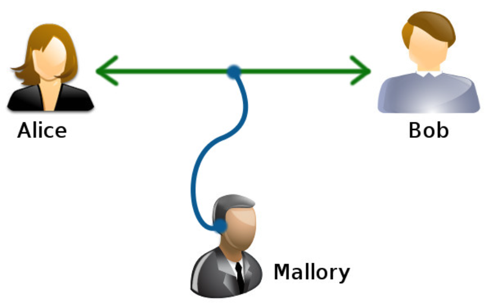</p> ## Encryption in Transit - Security does not really work through transitivity - A third party like Gmail. Eve is Gmail. - Alice has a secure connection to Gmail - Bob has a secure connection to Gmail - But that does not mean necessarily that Alice has a secure connection to Bob. ## Encryption in Transit - The data is only encrypted while in transit from A to E and from B to E - That doesn't mean that Eve, or Gmail in this story, can't be reading all of Alice's and Bob's emails. - There's nothing technically probably stopping them from reading anything and everything. ## Encryption in Transit - But technically speaking, just because Alice has a secure connection to Gmail and Bob has a secure connection to Gmail, that doesn't mean that their communications will be encrypted entirely between A and B. <div class="popup" onclick="myFunction13()"><p class="blink" style="font-size:24px;"><spanBYMix>Example</spanBYMix></p> <span class="popuptext" id="myPopup13" STYLE="font-size:22px">Zoom, when it comes to video conferencing, you might have an encrypted connection to Zoom, I might have an encrypted connection to Zoom. That does not necessarily mean that Zoom couldn't listen and watch everything that we're saying while video conferencing. So encryption in transit is good in that it at least keeps random people out of the picture because they don't have access to these encrypted channels. </span> </div> <p class='titlep'> </p> # <p class="hover-underline-animation">What is a stronger alternative?</p> <p class='titlep'> </p> # <p class="hover-underline-animation">An end-to-end encryption</p> ## Encryption in Transit - End-to-end encryption (E2EE) is a type of messaging that keeps messages private from everyone, including the messaging service. When E2EE is used, a message only appears in decrypted form for the person sending the message and the person receiving the message. [What is end-to-end encryption (E2EE)?](https://www.cloudflare.com/learning/privacy/what-is-end-to-end-encryption/#:~:text=End%2Dto%2Dend%20encryption%20(E2EE)%20is%20a%20type,the%20person%20receiving%20the%20message.) ## Encryption in Transit - This is a stronger guarantee whereby you can trust that Alice's connection to Bob is secure - Machines in the middle, - Companies in the middle, - Eavesdroppers in the middle ## Encryption in Transit - If you use encryption properly end-to-end, you can ensure that the only thing Eve or Google or Zoom can see is just your ciphertext. - End-to-end encryption isn't necessarily in most company's best interest. <p class='titlep'> </p> # <p class="hover-underline-animation">Why?</p> ## Encryption in Transit - Companies like Gmail tend to presumably mine our data, whether it's for advertising purposes or otherwise. - Sometimes in companies' interest to have access to your data to keep it secure on their servers. ## Encryption in Transit - iMessage and FaceTime for Apple users and WhatsApp internationally is known in particular for offering end-to-end encryption. If implemented truthfully and technically correctly, should guarantee that even though your messages might be going through WhatsApp servers, no employee at WhatsApp can actually see your messages because it's encrypted all the way from A to B
# Deletion
<p class='titlep'> </p> ## <p class="hover-underline-animation">How did you delete a file on your PC or your phone or some other device?</p> ## Deletion <p class='titlep'> </p> ## <p class="hover-underline-animation">Where did data go after deleting?</p> ## Deletion - Your USB stick contains a whole bunch of 0's and 1's, and those 0's and 1's represent your files and folders. ## Deletion ## Deletion <div class="wrapper nine"> <div> <h3 class="rotate"> <span>C</span> <span>0</span> <span>D</span> <span>I</span> <span>N</span> <span>G</span> </h3> </div> </div> ``` from PIL import Image from numpy import* temp=Image.open('cat.jpg') temp=temp.convert('1') # Convert to grayscale A = array(temp) # Creates an array, white pixels==True and black pixels==False new_A=empty((A.shape[0],A.shape[1]),None) # New array with same size as A for i in range(len(A)): for j in range(len(A[i])): if A[i][j]==True: new_A[i][j]=0 else: new_A[i][j]=1 for i in range(A.shape[0]): for j in range(A.shape[1]): print(int(new_A[i,j]),end="") print("") ``` ## Deletion - When you recycle a file, it doesn't actually get deleted, it is not really gone. ## Deletion - Empty the Recycle Bin, removed from my computer=> Don't actually get rid of the file, the computer forgets where it is (Blue: your file will probably get actually deleted.) ## Deletion - Some random 0's and 1's that may be overwrite some of the file, but not all of it. ## Deletion - Sensitive word document or Excel file or images that you had on your computer, there might still be there - Deleting a file doesn't really get rid of it ## Deletion - Typically when we delete files, they're not deleted securely. > Secure deletion > Secure deletion - Secure data deletion effectively erases or overwrites all traces of existing data from a data storage device. The original data on that device becomes inaccessible and cannot be reconstructed. [Secure data deletion](https://www.ibm.com/docs/en/flashsystem-5x00?topic=STHGUJ/com.ibm.storwize.v5000.8401.doc/svc_secure_data_deletion.htm) > Secure deletion - [Eraser](https://eraser.heidi.ie/) is an advanced security tool for Windows which allows you to completely remove sensitive data from your hard drive by overwriting it several times with carefully selected patterns. ## Deletion <div align="left"> [NTFS data-recovery](https://github.com/nneonneo/ntfsrecover) [Library - recoverpy](https://pypi.org/project/recoverpy/) [Library - FileRecovery](https://github.com/zleggett/FileRecovery) [Securely Deleting Data from Your Laptop Using Python](https://medium.com/@amalraj6198867/title-securely-deleting-data-from-your-laptop-using-python-0607ac8e8482) </div>
# Encryption at Rest
## Encryption at Rest - Some operating systems nowadays support <spanBYMix>full-disk encryption</spanBYMix> - Full-disk encryption (FDE) is a security method for protecting sensitive data at the hardware level by encrypting all data on a disk drive. FDE automatically encrypts data and operating systems (OSes) to prevent unauthorized access. - The disks are only readable with the appropriate encryption key. ## Encryption at Rest - If you enable a feature called full-disk encryption, which is actually a specific incarnation of an idea known as encryption at rest. ## Encryption at Rest - Encryption in transit refers to your data going back and forth from point A to point B. Encryption at rest means it's just sitting there on your device, in your pocket, or on your lap or on your desktop, ... - Only when you log in with your password or maybe your fingerprint or your face should that data be decrypted automatically, ... <p class='titlep'> </p> ## <p class="hover-underline-animation">Advantages?</p> ## Encryption at Rest - If your device gets stolen, not going to be able to get any of your data. - They can maybe delete all of your data and they can and sell your computer, they can use your computer, but they probably, if you're practicing best practices, don't have access to the data that's on the system. - It's completely encrypted at rest and they don't know your password, they don't have your fingerprint, they don't have your face, they should not be able to decrypt that data. ## Encryption at Rest - Microsoft includes a full disk encryption feature built into Windows called BitLocker. Windows 10 Enterprise <p>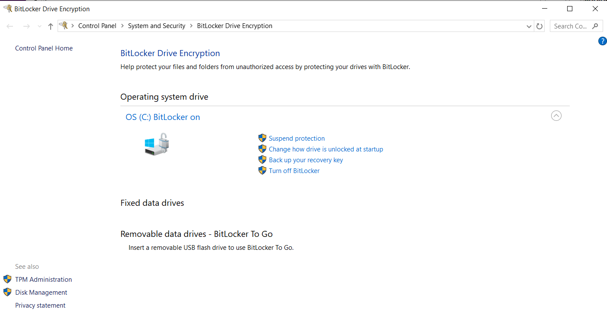</p> ## Encryption at Rest - BitLocker is a full-disk encryption feature in certain Windows versions (Pro, Enterprise, Education) that protects your data by encrypting the entire hard drive or removable media, preventing unauthorized access if your device is lost or stolen. <hr> - It uses a Trusted Platform Module (TPM) to manage encryption keys, ensuring only authorized users can unlock the drive upon system boot. If the system can't authenticate, a unique recovery key is needed to access the data.
# Ransomware
## Ransomware - An evil side to full-disk encryption - Ransomware is malware that employs encryption to hold a victim's information at ransom. A user or organization's critical data is encrypted so that they <spanRED>cannot</spanRED> access files, databases, or applications. A ransom is then demanded to provide access. <div class="popup" onclick="myFunction14()"><p class="blink" style="font-size:24px;"><spanBYMix>Example</spanBYMix></p> <span class="popuptext" id="myPopup14" STYLE="font-size:22px">It's not uncommon nowadays for hackers, for adversaries, when they get into a system, whether it's your laptop or, for instance, a corporate network, or in some cases, hospital systems or a city's own computer networks, to not try to do any damage or just do something like spam or cryptocurrency mining, but to actually encrypt all of the data on these systems they somehow accessed online. </span> </div> [What Is Ransomware?](https://www.trellix.com/security-awareness/ransomware/what-is-ransomware/#:~:text=Ransomware%20is%20malware%20that%20employs,then%20demanded%20to%20provide%20access.)
# Quantum Computing
<p class='titlep'> </p> ## <p class="hover-underline-animation">A future topic - quantum computing</p> <p class='titlep'> </p> <p class='titlep'> </p> # <p class="hover-underline-animation">0's and 1's today</p> <p class='titlep'> </p> > Patterns of 0's and 1's to represent numbers and letters and colors and videos and sounds and everything ## Quantum Computing 🌞 - Either a 0 or a 1. - In the world of quantum computing, there's this idea of not just a bit, but a quantum bit or qubit whose power derives from the reality that physically. - Implement a qubit in such a way that it is representing both a 0 and a 1 at the exact same time. ## Quantum Computing - Quantum computing uses specialized technology—including computer hardware and algorithms that take advantage of quantum mechanics—to solve complex problems that classical computers or supercomputers can’t solve, or can’t solve quickly enough. [What is quantum computing?](https://www.ibm.com/topics/quantum-computing) ## Quantum Computing - If you have two qubits, they can be in <div class="popup" onclick="myFunction15()"><p class="blink" style="font-size:24px;"><spanBYMix>?</spanBYMix></p> <span class="popuptext" id="myPopup15" STYLE="font-size:50px">four</span></div> states at once. - If you have three, they can be in <div class="popup" onclick="myFunction16()"><p class="blink" style="font-size:24px;"><spanBYMix>?</spanBYMix></p> <span class="popuptext" id="myPopup16" STYLE="font-size:50px">eight</span></div> states at once. - If you have 32 of them, they can be in <div class="popup" onclick="myFunction17()"><p class="blink" style="font-size:24px;"><spanBYMix>?</spanBYMix></p> <span class="popuptext" id="myPopup17" STYLE="font-size:50px">4 billion</span></div> states at once. ## Quantum Computing - Two classical bits: there are 4 possible configurations (00, 01, 10, 11), but a classical system is in exactly <spanBYMix>one</spanBYMix> of them at any moment. Two qubits: the state can be a superposition of all 4 basis states at once $$ |\psi\rangle = a|00\rangle + b|01\rangle + c|10\rangle + d|11\rangle, $$ $$ \quad |a|^2 + |b|^2 + |c|^2 + |d|^2 = 1 $$ - Note: $\psi$ - Greek letter called psi (In English, it’s usually pronounced like "sigh"). ## Quantum Computing - When you measure, you only see one of the 4 outcomes, with probabilities $|a|^2$, .... Between preparation and measurement, amplitudes can interfere, and qubits can be entangled (e.g., $(|00\rangle + |11\rangle)/\sqrt{2}$, which has no classical counterpart. <p class='titlep'> </p> <p class='titlep'> </p> # <p class="hover-underline-animation">What does it mean?</p> <p class='titlep'> </p> <p class='titlep'> </p> > If adversaries have access to quantum computing before you and I do, then all of the security you and I now rely on and that we've talked about today could suddenly become <spanREd>insecure</spanREd>. ## Quantum Computing - Because we're trusting right now that it's just going to take the adversary <spanREd>a lot, a lot, a lot</spanREd> of time, maybe money, maybe resources, maybe risk to attack our accounts. - But if they have exponentially more resources than you and me, then our data really is at risk. > <fttitle>Quantum Computing using Python</fttitle> - PennyLane is an open-source Python library designed for quantum machine learning (QML). It facilitates the creation, simulation, and optimization of quantum circuits, enabling seamless integration with classical machine learning frameworks such as TensorFlow and PyTorch. [Demos of PennyLane](https://pennylane.ai/search/?contentType=DEMO&categories=getting%20started) > <fttitle>Google colab</fttitle> <div class="wrapper nine"> <div> <h3 class="rotate"> <span>C</span> <span>O</span> <span>D</span> <span>I</span> <span>N</span> <span>G</span> </h3> </div> </div> ``` pip install pennylane ``` A lightning.qubit device can be loaded using: ``` import pennylane as qml dev = qml.device("lightning.qubit", wires=1) ``` <div align="left"> In PennyLane, a device could be a hardware device, or a software simulator (such as the simulator [PennyLane-Lightning](https://docs.pennylane.ai/projects/lightning/en/stable/)). </div> <div class="wrapper nine"> <div> <h3 class="rotate"> <span>M</span> <span>O</span> <span>R</span> <span>E</span> <span>C</span> <span>O</span> <span>D</span> <span>I</span> <span>N</span> <span>G</span> </h3> </div> </div> ``` import pennylane as qml from jax import numpy as np import jax # Initialize the 'lightning.qubit' device provided by PennyLane. dev1 = qml.device("lightning.qubit", wires=1) # Notes: This creates a quantum simulator device called "lightning.qubit" (a fast C++ backend for simulating qubits). wires=1 means we are simulating one qubit. # Convert it into a QNode running on device dev1 by applying the qnode() @qml.qnode(dev1) # Define the quantum function that will be evaluated in the QNode. A QNode is a quantum function wrapped so it can run on a chosen device. def circuit(params): qml.RX(params[0], wires=0) qml.RY(params[1], wires=0) return qml.expval(qml.PauliZ(0)) # Note: So the circuit applies two rotations and then asks: what is the average Z measurement outcome? #circuit() quantum function is now a QNode, which will run on device dev1 every time it is evaluated. #To evaluate, call the function with some appropriate numerical inputs. Runs the quantum circuit with those angles. params = np.array([0.54, 0.12]) print(circuit(params)) ``` [Basic tutorial: qubit rotation](https://pennylane.ai/qml/demos/tutorial_qubit_rotation/) > This is not running on a real quantum computer — it’s simulating one qubit on your classical machine, but using the same interface that could also run on hardware if you swapped the backend device.
<bodyDp> <div class="dancer"> <div class="head"></div> <div class="leg-left"></div> <div class="leg-right"></div> <div class="foot-left"></div> <div class="foot-right"></div> </div> </bodyDp> # Assignments
## Assignments 🌞 - <a href="https://midway.instructure.com/courses/7239/quizzes/32795">Question for Data Security</a>